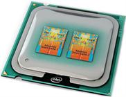

Подбор (Выбор) процессора.

Решили обновить центральный процессор ПК? А может быть, вы собираете компьютер и не знаете, какой выбрать процессор? И вправду, а какой лучше? Да,
предположение о том, что чем дороже вещь, тем она лучше верно, но кошелек не резиновый. Усядьтесь поудобнее, прихватите чай и плюшки и внимайте.
Центральный процессор - настоящая золотая жила любого компьютера. На его плечи сваливается абсолютно вся работа, относящаяся к программному обеспечению.
Он обрабатывает различные данные, производит огромное количество вычислительных операций в секунду и не только. Очень важно
при сборке компьютера онлайн
выбрать правильный процессор. Во многом именно он будет определять потенциал вашей будущей смерти тормозам.
Весь мир поделен на два лагеря - на приверженцев стана Intel и тех, кто души не чает в AMD. Определить кто из них условно «круче» сложно, так как
и первый и второй обладают своими плюсами и своими недостатками. Какими? Узнаете чуть ниже. Мы не станем рассматривать всю линейку процессоров от
обоих гигантов, так как старые процессоры потихоньку уступают место новоиспеченным монстрам.
Начнем мы со стана Intel. На данный момент Intel предоставляет пользователям следующие процессоры Intel Core i3, i5 и i7. Маркировочное число напрямую
намекает о тактовой частоте процессора, то есть, чем выше индекс, тем выше тактовая частота (один из основных показателей производительности,
старайтесь опираться на него). По порядку. Модели Core i3 двухъядерные, на борту несут по 512 Кб кэша L2, а также в них имеется встроенная видео
система Intel HD Graphics.
Теперь перейдем к модели Core i5. Модельный ряд делится на процессоры Core i5-6xx и Core i5 7xx. Те, что с индексом 6xx двухъядерные, у них также
имеется встроенный видеочип, на борту 512 Кб L2 кэша и 4 Мб L3 кэша. Процессоры Core i5 с индексом 7хх четырехъядерные, а вот встроенная видео система
отсутствует. На кэш второго уровня приходится 1 Мб, а на кэш третьего 8 Мб.
И, наконец, флагман линейки - процессоры Core i7-xxx. Они четырехъядерные, но имеются и шестиядерные гиганты, например, Core i7 Extreme 970/975/980X.
Встроенный видеочип отсутствует. Объем кэша на первом и втором уровнях идентичен объему процессоров Core i5 7xx. Устанавливать этого монстра стоит на
сокет LGA 1366 или LGA 1156.
Стоит упомянуть и о недавно появившихся процессорах Core i7-2xxx. Представлена данная линейка одной моделью - Core i7 2600, который устанавливается на
сокет LGA 1155. Главным отличием от первого семейства процессоров Core i7 является наличие видеочипа. Объем кэша аналогичен вышеуказанным процессорам Core i7.
Второе семейство имеется и у процессоров Core i3 (Core i3-2xxx), Core i5 (Core i5-2xxx). Все они отличаются повышенной энергоэффективностью и экономичностью.
Как правило, помечаются буквой «S», либо букой «T», если это высоко энергоэффективный процессор, «K» - если у процессора снята блокировка множителя.
Это все что нужно знать о процессорах Intel, теперь перейдем к AMD. Рассмотрим две линейки: Athlon II и Phenom II.
«Атлоны» бывают двухъядерные (Athlon X2 2xx), трехъядерные (Athlon X3 4xx) и, соответственно, 4-х ядерные (Athlon X4 6xx). Трехзначное число зависит от
тактовой частоты процессора. Чем она больше, тем больше индекс. Кстати, в большинстве случаев трехъядерные процессоры можно разблокировать.
>>Разблокирование процессоров AMD.
Процессоры Phenom II бывают 2-х ядерные (Phenom II X2), 4-х ядерные (Phenom II X4) и 6-ти ядерные (Phenom II X6). Двухъядерные имеют по 1 Мб L2 кэша и 6 Мб
кэша третьего уровня, четырехъядерные имеют 2 Mb кэша второго уровня и 6 Мб L3 кэша. Флагманы X6 имеют 3 Мб L2 кэша и тоже 6 Мб L3 кэша.
Теперь скажем пару слов, о комплектациях. Имеются комплектации BOX и OEM. В комплектации BOX имеется кулер, который идет вместе с процессором. Комплектация
OEM предлагает «голый» процессор. Если вы не собираетесь баловаться разгоном, то смело берите BOX версию, хоть она и стоит дороже. Если же хотите поставить
более эффективный кулер, то приобретайте версию OEM.
Ну, теперь вы осведомлены о процессорах, которые сейчас имеются в любом крупном компьютерном магазине. Дадим пару советов, на которые стоит опираться при
выборе процессора. Обязательно учитывайте тактовую частоту, размер кэша, а также сокет. Для тех, кто не в курсе, поясняем, что сокет - это место крепления
процессора. В основном опирайтесь на эти 3 критерия. Соответственно, чем они выше, тем лучше. Сразу приходит мысль, что нужно брать самый дорогой, а нет.
Мы поможем сделать наилучший выбор в соотношении производительность/цена с минимальными затратами.
Итак, если вы приверженец стана Intel и у вас не так-то много денег, но вы хотите играть в современные игры без тормозов, то обратите внимание на модели
Intel Core i3-540 с тактовой частотой в 3.06 Ггц. Стоит он около 110 у.е., что вполне приемлемо, а производительно его высокая. Если можете потратить на
процессор около 220 у.е., то рекомендуем модель Core i5 - 2500. Стоит он относительно недорого, а его производительность просто заурядна.
Любите AMD? Тогда обратите внимание на такие процессоры, как Athlon II X4 640. Он стоит 100 у.е. с копейками, а производительность на уровне Core i3. Кому
не жалко и 200 у.е., то могут приобрести очень мощный процессор Phenom II X6 1090T. Стоит он около 180, зато обеспечивает превосходную производительность.
Справедливости ради, стоит отметить, что AMD всегда были дешевле, предлагая ту же самую производительность. Что ж, теперь вы осведомлены, а значит вооружены.
Читайте также:
Оптические процессоры - компьютерные технологии будущего.
Как правильно выбрать материнскую плату.
Сравнение процессоров.
Следующая статья:
Оперативная память.